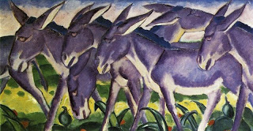

Bava Batra 74 - Stories of Rabbah bar bar Chanah

Rabbah bar bar Chana told the following story.
An Arab merchant said to me, "Come, I will show you Mount Sinai." I went and saw that scorpions surrounded it, and they resembled white donkeys. I heard a Heavenly voice saying, "Woe to me (God) that I have sworn to exile My people; and now that I have sworn, who can annul the oath for Me?"
When Rabbah came back, the Rabbis told him, - Every Abba (his proper name) is a donkey, and every bar bar Chanah is a fool. You ought to have declared, "It is annulled for You."
And Rabbah, what did he think? That perhaps the Heavenly voice was talking about the oath about the Flood .
And the Rabbis? If so, then why did the Heavenly voice say "Woe is to Me" about something that is for mankind's good?